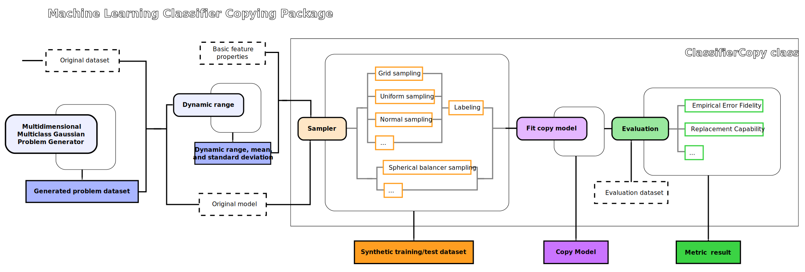

Machine Learning Classifier Copies
The use of propietary black-box machine learning models and APIs makes it very difficult to control and mitigate their potential harmful effects (such as lack of transparency, privacy safeguards, robustness, reusability or fairness). The technique of Machine Learning Classifier Copying allows us to build a new model that replicates the decision behaviour of an existing one without the need of knowing its architecture nor having access to the original training data.
Among the multiple applications of Machine Learning Classifier Copying, a systematic construction and examination of model copies has the potential to be a universally accessible and inexpensive approach to study and evaluate a rich variety of original models, and to help understand their behavior.
An implementation of Machine Learning Classifier Copying has been added to the PRESC package, so that this tool becomes readily accessible to researchers and practitioners. The solution provides a model agnostic sampling strategy and an automated copy process for a number of fundamentally different hypothesis spaces, so that the set of achievable copy-model-fidelity measures can be used as a diagnostic measure of the original model characteristics.
A step by step Tutorial and a number of examples illustrating how to use the package can be found in the examples folder of the PRESC repository.
Copying pipeline
{kind=link}
To carry out the copy, the presc.copies.copying.ClassifierCopy class needs two inputs: the original classifier to copy and, depending on the sampler, a dictionary with basic descriptors of the features. Right now the package assumes that we have the classifier saved as a sklearn-type model. The original data is not necessary to perform the copy but, if available, the presc.copies.sampling.dynamical_range function can conveniently extract the basic descriptors of its features into a dictionary. In this case, the data should be available as a pandas DataFrame. Otherwise, the dictionary with the basic feature descriptors can always be built manually. Even if we don’t have access to the original data or detailed information of the features, we need at least to be able to make a guess or some assumptions about them.
When instantiating the presc.copies.copying.ClassifierCopy class, an instance of a sklearn-type model or pipeline to build the copy must also be specified, as well as the choice of sampling function and its options. The necessary feature descriptors for the sampler can be the maximum and minimum values that the features can take, like in the case of presc.copies.sampling.grid_sampling and presc.copies.sampling.uniform_sampling, the mean and standard deviation of each feature, such as in the presc.copies.sampling.normal_sampling, or an overall minimum and maximum single value common to all features, as in the case of presc.copies.sampling.spherical_balancer_sampling.
In the case of samplers for categorical data, such as presc.copies.sampling.categorical_sampling and presc.copies.sampling.mixed_data_sampling, the data descriptor for each categorical feature must be a dictionary of categories that specifies their frequency.
The presc.copies.copying.ClassifierCopy.copy_classifier method will generate synthetic data in the feature space using the sampling function and options specified on instantiation, will label it using the original classifier, and then will use it to train the desired copy model. The generated synthetic training data can be saved in this step if needed but it can also be recovered later using the presc.copies.copying.ClassifierCopy.generate_synthetic_data method simply using the same random seed.
Imbalanced problems
When we talk about imbalance in ML Classifier Copies we are not referring to the balance between classes provided by the original dataset, which is in principle not accessible and thus it does not have any effect in the copy. We are referring to the imbalance of the synthetic dataset used to generate the copy.
Such an imbalance arises from a combination of the particular topology of the class boundaries learned by the original classifier and the sampling strategy to perform the copy. For instance, when using samplers that probe the space uniformly, the probability of having a class in the synthetic dataset is proportional to the volume of the space defined by its boundaries. Or when using a spherical sampler that assumes a gaussian distribution of the features, the probability of having a class in the synthetic dataset might increase for those classes that are located closer to the origin with respect to those in the outskirts, even if they occupy a similar volume.
The copy classifier is normally built using generated data randomly sampled from the whole space, hence, this process will normally tend to generate many more samples for classes that are described by the classifier as occupying a much larger hypervolume. Therefore, it will be the generated data used to train the copy classifier which becomes imbalanced.
To tackle this problem, a mechanism has been introduced to force the balance between classes when generating the synthetic data. Such option can be used with any of the sampling functions by setting the enforce_balance as True.
Continuous copies
Sometimes with complex feature spaces, with many dimensions, or with complex original classifiers, the volume of generated synthetic data needed to carry out the classifier copy is too large to fit in the computer memory at the same time. In order to tackle this problem we can resort to online copying. However, online copying can only be carried out with copy classifier models that have the ability of incremental training.
The presc.copies.continuous.ContinuousCopy class is an online ML classifier copier that works with standalone sklearn classifiers as well as pipelines, as long as each transformer and estimator has a partial_fit function implemented. There is more than one way to train pipelines with incremental transformers and estimators, here we simply take each data batch and train the first element of the pipeline, then transform the incoming data with the first element, then train the second, then transform the data with the second, use this transformed data to train the third, etc.
The online copier will continuously take data batches from the specified queue to perform the incremental training of the copy, as soon as any data batch is available, but it is agnostic as to how the data is added to the queue. Therefore, this queue can be populated using any desired source.
The presc.copies.continuous.SyntheticDataStreamer class generates a continuous stream of generated data that can populate the queue. Several online copies can use the same stream of synthetic data.
These classes can also be useful when the necessary amount of synthetic data to perform a good copy is unknown, because the copy can then simply be stopped when that goal is reached.
Evaluation of the copy
After the copy has been obtained, an evaluation of the copy can be carried out using the presc.copies.copying.ClassifierCopy.compute_fidelity_error and the presc.copies.copying.ClassifierCopy.replacement_capability methods. A more complete overview can also be obtained using presc.copies.copying.ClassifierCopy.evaluation_summary.
The evaluation methods need data with which to perform the evaluation, so an unlabeled array-like parameter should be specified when calling them. If original test data is available, it can be used as a test for the copy evaluation. Otherwise, synthetic test data can be generated with the presc.copies.copying.ClassifierCopy.generate_synthetic_data method simply using another random seed. However, interpretation of the results will of course have a different meaning than with the original test data.
Empirical Fidelity Error
When performing a copy, we do not aim for an improvement of the original model performace, but to obtain the exact same behavior. Hence, the copy will be of higher quality when it mimics the orginal model exactly, including its misclassifications. To evaluate this, the best metric to use is the Empirical Fidelity Error.
The Fidelity Error captures the loss of copying, and in its general form is the probability that the copy resembles the model. It evaluates the disagreement between the prediction of the original model and the prediction of the copy model through the percentage error of the copy over a given set of data points, taking the predictions of the original model as ground truth. In the ideal case, the fidelity error is zero and the accuracy of the copy is the same as that of the original classifier.
Since the synthetic dataset is always separable, theoretically it is always possible to achieve zero empirical error, given we choose a copy model with enough capacity. Hence, copying can be in theory carried out without any loss. However, in practice the generated dataset is invariably finite.
A low Empirical Fidelity Error does not guarantee a good copy. In addition to that, the generated dataset to perform de copy must ensure a good coverage of the input space, and any volume imbalance effect needs to be accounted for as well.
Replacement Capability
Sometimes we do not really need an exact copy of the original model yielding identical predictions, but we just need to obtain a new model that guarantees the same performance as the original. In these cases we are not concerned with mimicking the predicted classification of specific data points as long as the generalization ability of the copy model is good enough. In this scenario, the best way to evaluate the performance of the copy is to use the Replacement Capability.
The Replacement Capability is the ratio between the accuracy of the copy model with respect to the accuracy of the original model, and it quantifies the ability of a copy to replace the original without any loss in performance. This means that the replacement capability will be one if the copy model matches the accuracy of the original, and that it can have a high value even if the performance of the copy model is not very good, as long as the copy is at least as good as the original.
The Replacement Capability can also yield in some cases values much larger than one if the copy model generalizes better than the original. This is not normally the case, but it might happen if the original model was poorly chosen and the copy model family is better suited to describe the boundary profile of the original problem.
Best practices
Determine motivation for the copy
Do you want to ensure you get the exact same behavior as the original model? There are many use cases where it is imperative to maintain the consistency between the original and the copy models. If this is so, use the empirical fidelity error to evaluate your copy.
Do you only want to ensure you get a model with the performance as good or better as the original model but maintaining consistency is not important? In this case, use the copy replacement capability to evaluate your copy.
Model selection
Test data
If some labeled original test data is available, it is always more reliable to use that to compute the metrics and carry out the copy evaluation. Even if that original data is not labeled, it can always be labeled using the prediction of the original model and then be used to evaluate the copy. But this will at least ensure that the sampling is done following the original feature distribution.
If no original data is available, then a test synthetic dataset can be generated for evaluation of the copy. But be aware that, if this dataset is generated with the same sampler that was used to carry out the copy, the test will focus on the same regions of the feature space where the copy has had more training. Hence, the fidelity or the performance of the copy will not be evaluated as rigorously on the regions of the decision boundary that are far from the populated regions of the synthetic sample distribution. All this also depends on the assumptions we make when selecting the sampling scheme.
Sampling in evaluation
What does it mean if the copy has a low empirical fidelity error with synthetic data, but at the same time has a high fidelity error with test data?
The copy is often created without having a priori an idea of the distribution of the real data, which means that real data may be located mostly in a particular region of the feature space while synthetic data will tend to be more broadly distributed to account for our lack of knowledge. A higher concentration of samples in certain regions of the feature space will force the decision boundary to have a higher accuracy there. So, even if the copy model is from the same family as the original classifier model, the assumptions that are made to generate the synthetic data will possibly yield classifiers with different decision boundaries.
Likewise, the synthetic test data that can be generated from each sampling scheme normally probes the accuracy of the copy model with an emphasis on different regions of the feature space than the original test data. Therefore, the original model, which has been trained with real data, will have a tendency of having particular regions of the boundaries with a higher accuracy, while the copy model will be trained with data that enforces the classifier to have a similar boundary as the original one mostly everywhere.
When a copy is better than another in the synthetic data, but is worse in the test data, this normally means that the first copy resembles the original better overall but perhaps in the region where the real data are concentrated it doesn’t have a particularly good performance. Therefore, it is important to try to have a copy with a good boundary everywhere (so that the region of interest is also included), or to try to determine the distribution of the real dataset, or the region of interest of the real data, when this is possible.
Sampling
Standardize the features
Certain samplers, such as the spherical sampler in this package, may not handle well a large difference in the absolute magnitude of the different features, or that they are not centered in the origin. Therefore, it is advisable to standardize the input data in case of doubt. However, it is unavoidable with this sampler, that classes in more centric regions will be better sampled that more peripherical ones.
Reduce the features space
Although ML classifier copies can be carried out without any access to the original data, at least some assumptions about the data types and relevant ranges of the features are necessary, because the original model will be have to be queried to carry out its prediction on the sampled data, so it must have a format that is accepted as input.
The more precise the assumptions that can be made, the more efficient the sampling will be, which is specially relevant in problems with a large number of dimensions.
If the feature space descriptors are extracted from original data, be careful with outliers because they can enormously and unnecessarily increase the feature space that will need to be sampled. It is a good practice to always review any feature space descriptors that were automatically extracted from the original data, in order to reduce excessively wide ranges and to correct obvious misalignments.
Choice of sampler
Proper sampling of the feature space is one of the key issues to ensure a successful copy, but it quickly becomes very challenging as the number of features increase. If we have no information on the feature distributions, it is a good idea to use a uniform sampler, but this may quickly become very inefficient as the number of features increase, where a normal or a spherical sampler may be more appropriate.
Handle imbalance
In ML classifier copies, imbalance between classes arises when they are sampled inequally, either because they occupy very disparate volumes of the feature space, as in the case of uniform samplers, or because the sampler does not explore the feature space homogeneously. Hence, it is also a good practice to ensure that a similar number of synthetic samples are generated for all classes.
Copy model characteristics
Choice of copy model family
Every model family is able to shape the decision boundary in a different manner. If the goal is to carry out an exact copy of the original model with the lowest empirical fidelity error, it must be ensured that the copy model family has the ability to mimic the shape of the decision boundary in the same manner as the original model. For instance, decision tree classifiers describe decision boundaries with picewise constant boundaries, but have a harder time to perfectly mimic models with general linear boundaries and viceversa, other model families may have a hard time mimicking such abrupt angles.
Conversely, if the goal of the copy is mainly to be able to replace the original model with a classifier of a similar or better performance, then the copy model family must have the ability to describe the inherent topology of the problem instead. In some cases, if the original model was not the best choice to describe the problem’s inherent decision boundary, a good choice of the copy model family may even surpass the original in accuracy and yield a replacement capability larger than one.
Complexity of the copy model
The ML classifier copy problem is always separable, and overfitting is not an issue. An arbitrarily large number of samples can in principle be generated in order to ensure an appropriate coverage of the feature space to properly fit the copy classifier. However, the complexity capability of the copy classifier must be at least as large or more than the original classifier to obtain a good copy.
When the performance of the copy gets stuck and falls short of the original classifier, despite an increasing number of generated samples, it is an indication that the complexity of the copy model may be too low.